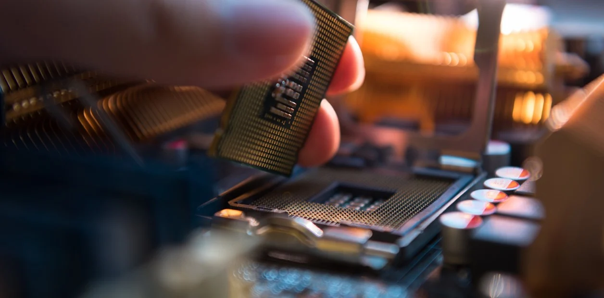

Como estudiante adolescente apasionado por la informática y las computadoras, he tenido la oportunidad de explorar y aprender mucho en este campo. Recientemente, me embarqué en un proyecto personal de construcción de mi propia PC.
Investigué y seleccioné los componentes, desde la placa base hasta la tarjeta gráfica y el procesador. Fue emocionante explorar las diferentes opciones y tomar decisiones basadas en el rendimiento, el presupuesto y las necesidades específicas. Mi tío me ayudó a comprar las partes y esperar ansiosamente su entrega.
Una vez que tuve todas las piezas en mis manos, llegó el momento de armar la PC. Aunque no era mi primera vez, me aseguré de seguir cuidadosamente las instrucciones y los tutoriales en línea. Conecté los cables, instalé la RAM, el disco duro y el sistema de refrigeración.

Después de un poco de sudor y esfuerzo, finalmente encendí mi nueva PC por primera vez. Fue una sensación increíble de logro ver mi creación cobrar vida y funcionar sin problemas. Me aseguré de instalar el sistema operativo (que ya tenía en un disco duro externo) y configurar todos los controladores necesarios con los programas que me dio el docente del curso que seguí hace 1 año para optimizar el rendimiento.
Desde entonces, mi PC es lo más preciado que tengo. Me ha brindado la oportunidad de sumergirme en el desarrollo de software, la edición de video, el diseño gráfico y muchas otras áreas relacionadas. También he tenido la oportunidad de solucionar problemas técnicos y a realizar tareas de mantenimiento.
Esta experiencia de construir mi propia PC me ha enseñado mucho sobre los componentes de una computadora, su compatibilidad y cómo ensamblarlos correctamente. También me ha brindado una base sólida para comprender mejor el funcionamiento interno de una PC y realizar mejoras en el futuro.
En resumen, construir mi propia PC como ex estudiante técnico de sistemas fue una experiencia emocionante. Me permitió aplicar mis conocimientos que obtuve del curso que seguí, desarrollar habilidades de resolución de problemas y ganar confianza en mis capacidades tecnológicas. Fue un hito importante en mi viaje como apasionado de la informática y estoy emocionado de seguir explorando y aprendiendo en este campo.